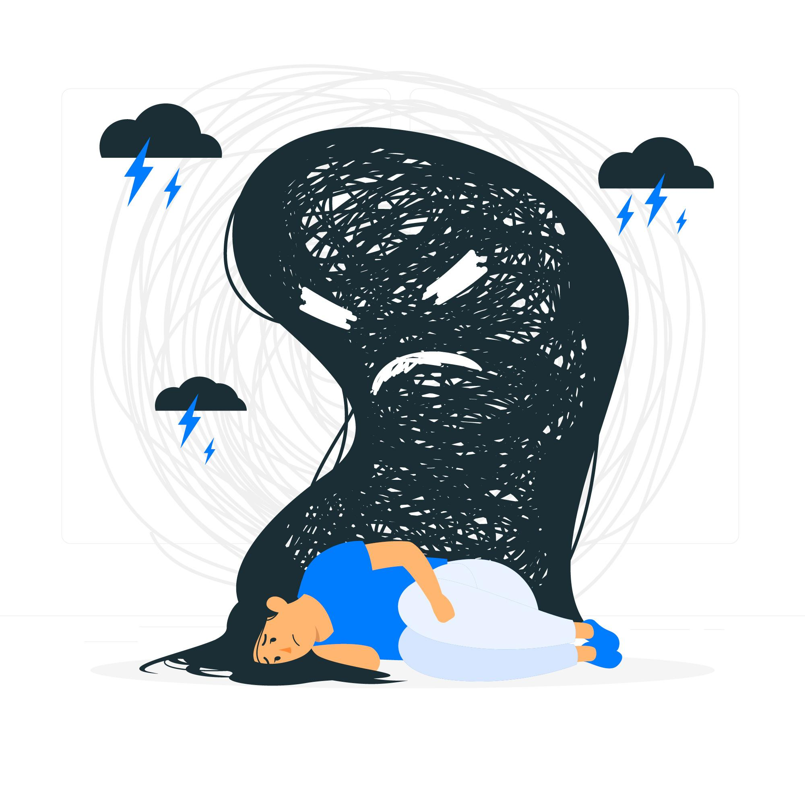

Grupo mais Saúde
Levando informações sobre saúde mental
Mitos relacionados(Clique nos subtitulos para as informações aparecerem)
Mitos relacionados a ansiedade

1. Se sofro de ansiedade, é porque estou fazendo algo errado em minha vida
2. Sou uma pessoa ansiosa, a ansiedade faz parte de mim e não posso mudar isso
3. Afastar-se da causa da ansiedade faz com que ela suma

1. Quem sofre de depressão é fraco
2. A doença está na sua mente
3. A depressão é o mesmo que a tristeza

1. Bipolaridade só afeta o humor
2. Transtorno bipolar é uma mudança normal de humor
3. Pessoas bipolares são frágeis